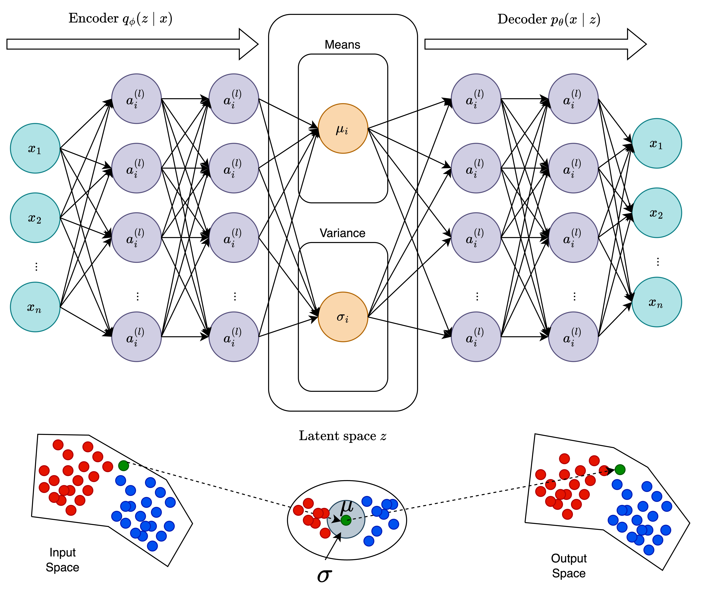

Tutorial 2.2: Deep Learning based IDS


In modern cybersecurity, labeled attack data is often scarce or incomplete. Many attacks are unknown, rare, or stealthy (APT, ATA). Neural network-based unsupervised models, such as Variational Autoencoders (VAE) and One-Class Neural Networks (OC-NN), can learn the normal behavior of network traffic and flag deviations as anomalies. These approaches are particularly useful for intrusion detection, malware monitoring, and unusual user behavior detection.
Tutorial Objectives
By the end of this tutorial, you will be able to:
Understand neural network approaches to anomaly detection.
Explain the mathematical formulation of VAE and OC-NN for anomaly detection.
Implement VAE and OC-NN using PyTorch.
Evaluate anomaly detection performance on the KDDCUP99 dataset.
Neural Network-Based Anomaly Detection in Cybersecurity
Traditional anomaly detection algorithms, such as Isolation Forest or One-Class SVM, are effective for tabular data, but they can struggle with high-dimensional, complex, or non-linear feature distributions. Neural networks provide:
Flexibility: Can model complex, non-linear relationships.
Feature learning: Automatically extract latent representations.
Probabilistic modeling: In the case of VAE, estimate the likelihood of each observation.
Variational Autoencoder (VAE)

Probabilistic Model
The data likelihood is defined as:
where the prior over latent variables is a standard normal distribution:
Since the true posterior \(p_\theta(z \mid x)\) is intractable, the VAE introduces an approximate posterior (encoder) \(q_\phi(z \mid x)\) to estimate it.
Training Objective: Evidence Lower Bound (ELBO)
The model is trained by maximizing the Evidence Lower Bound (ELBO):
The first term is the reconstruction likelihood, encouraging accurate reconstruction of inputs.
The second term is the Kullback–Leibler (KL) divergence, acting as a regularizer to keep the latent space close to the prior \(\mathcal{N}(0, I)\).
Intuition
The VAE consists of two main components:
- Encoder (Inference network): learns to map data \(x\) into a latent representation \(z\)\(q_\phi(z \mid x) = \mathcal{N}(\mu(x), \sigma^2(x) I)\)
- Decoder (Generative network): reconstructs data from the latent representation\(p_\theta(x \mid z) = \mathcal{N}(f_\theta(z), \sigma^2 I)\)
Anomaly Detection with VAE
where \(\hat{x} = f_\theta(z)\) is the reconstructed input.
Low reconstruction error → sample lies on the learned manifold → likely normal
High reconstruction error → sample deviates from normal behavior → potential anomaly
[34]:
### Importing required libraries
import pandas as pd
import numpy as np
import matplotlib.pyplot as plt
import seaborn as sns
from sklearn import datasets
from sklearn.model_selection import train_test_split
from sklearn.metrics import confusion_matrix
from sklearn.ensemble import IsolationForest
from sklearn.svm import OneClassSVM
from sklearn.covariance import EllipticEnvelope
from sklearn.decomposition import PCA
from sklearn.metrics import confusion_matrix, accuracy_score
from sklearn.utils import resample
Step 1: Load and Explore the KDDCUP99 Dataset
First, we’ll load the SA subset of the KDDCUP99 dataset to keep computation manageable. Then we’ll explore and visualize the data.
[35]:
# ### Step 1: Load and Explore the KDDCUP99 Dataset
X, y = datasets.fetch_kddcup99(
subset="SA", # Use the 'SA' subset (smaller sample)
percent10=True, # Use 10% of the full dataset for efficiency
random_state=42, # Ensure reproducibility
return_X_y=True, # Return data and labels separately
as_frame=True # Load as pandas DataFrame
)
# Convert binary label: 1 = attack, 0 = normal
y = (y != b"normal.").astype(np.int32)
# Take only 10% of the data for quick demonstration
X, _, y, _ = train_test_split(X, y, train_size=0.1, stratify=y, random_state=42)
# Display dataset stats
n_samples, anomaly_frac = X.shape[0], y.mean()
print(f"{n_samples} datapoints with {y.sum()} anomalies ({anomaly_frac:.02%})")
# Plot label distribution
plt.hist(y, bins=[-0.5, 0.5, 1.5], edgecolor='black')
plt.xticks([0, 1], ['Normal', 'Attack'])
plt.title('Histogram of Labels')
plt.xlabel('Label')
plt.ylabel('Frequency')
plt.show()
10065 datapoints with 338 anomalies (3.36%)

Notes:
The histogram provides a visual overview of class imbalance in the dataset. In the KDDCUP99 subset, normal traffic far outnumbers attack events.
This imbalance is typical in cybersecurity datasets, reflecting real-world conditions where attacks are rare relative to benign activity.
From a theoretical perspective, Intrusion Detection Systems (IDS) face two main challenges in such imbalanced environments:
Scarcity of labeled attack data: Many attack patterns are unknown, costly to label, or represent vulnerabilities not yet exploited.
Diversity of attack types: Attacks can range from common automated probes to sophisticated Advanced Persistent Threats (APT) and Advanced Targeted Attacks (ATA), which occur rarely and blend into normal traffic.
Therefore, the observed class imbalance in the histogram justifies the use of unsupervised anomaly detection models (such as Isolation Forest), which do not rely on balanced labeled datasets but exploit the intrinsic structure of the data to detect deviations.
Step 2: Data Preprocessing
Before training, categorical (non-numeric) features must be converted into numerical form. We’ll use one-hot encoding with pandas.get_dummies().
[36]:
# Convert categorical variables to numerical format
X = pd.get_dummies(X)
print(f"Feature matrix shape after encoding: {X.shape}")
X.head()
Feature matrix shape after encoding: (10065, 6536)
[36]:
| duration_0 | duration_1 | duration_2 | duration_3 | duration_4 | duration_5 | duration_6 | duration_7 | duration_8 | duration_9 | ... | dst_host_srv_rerror_rate_0.91 | dst_host_srv_rerror_rate_0.92 | dst_host_srv_rerror_rate_0.93 | dst_host_srv_rerror_rate_0.94 | dst_host_srv_rerror_rate_0.95 | dst_host_srv_rerror_rate_0.96 | dst_host_srv_rerror_rate_0.97 | dst_host_srv_rerror_rate_0.98 | dst_host_srv_rerror_rate_0.99 | dst_host_srv_rerror_rate_1.0 | |
|---|---|---|---|---|---|---|---|---|---|---|---|---|---|---|---|---|---|---|---|---|---|
| 26890 | True | False | False | False | False | False | False | False | False | False | ... | False | False | False | False | False | False | False | False | False | False |
| 35471 | False | True | False | False | False | False | False | False | False | False | ... | False | False | False | False | False | False | False | False | False | False |
| 37027 | True | False | False | False | False | False | False | False | False | False | ... | False | False | False | False | False | False | False | False | False | False |
| 80164 | False | False | False | False | False | False | False | False | False | False | ... | False | False | False | False | False | False | False | False | False | False |
| 73649 | True | False | False | False | False | False | False | False | False | False | ... | False | False | False | False | False | False | False | False | False | False |
5 rows × 6536 columns
Notes:
Many columns in KDDCUP99 are categorical (e.g., protocol type, service, flag).
One-hot encoding converts these categories into binary vectors, making them compatible with ML models.
Step 3: Train-Test Split
We split the dataset into training (80%) and testing (20%) subsets.
[37]:
X_train, X_test, y_train, y_test = train_test_split(
X, y,
test_size=0.2,
random_state=42
)
# Keep only normal samples in the training set
X_train = X_train[y_train == 0]
print(f"Training only on normal points: {len(X_train)} samples")
print("Testing samples:", len(X_test))
Training only on normal points: 7784 samples
Testing samples: 2013
[38]:
import torch
import torch.nn as nn
import torch.optim as optim
from sklearn.metrics import confusion_matrix, classification_report
device = "cuda" if torch.cuda.is_available() else "cpu"
# --- Convert Data ---
X_train_tensor = torch.tensor(X_train.values, dtype=torch.float32).to(device)
X_test_tensor = torch.tensor(X_test.values, dtype=torch.float32).to(device)
Step 4: Variational Autoencoder (VAE) Implementation
[39]:
input_dim = X_train.shape[1]
latent_dim = 10
# --- 1. Encoder Class ---
class Encoder(nn.Module):
def __init__(self, input_dim, latent_dim):
super().__init__()
# Feature extraction part (equivalent to fc1 + ReLU in original)
self.feature_extractor = nn.Sequential(
nn.Linear(input_dim, 64),
nn.Tanh()
)
# Layers for mean (mu) and log variance (logvar)
self.fc_mu = nn.Linear(64, latent_dim)
self.fc_logvar = nn.Linear(64, latent_dim)
def forward(self, x):
h = self.feature_extractor(x)
mu = self.fc_mu(h)
logvar = self.fc_logvar(h)
return mu, logvar
# --- 2. Decoder Class ---
class Decoder(nn.Module):
def __init__(self, latent_dim, output_dim):
super().__init__()
# Decoder network (equivalent to fc2 + ReLU + fc3 in original)
self.decoder_net = nn.Sequential(
nn.Linear(latent_dim, 64),
nn.Tanh(),
nn.Linear(64, output_dim)
# A final activation (like Sigmoid or Tanh) is often added here
# for image/bounded data, but is omitted for general real-valued data
# where the loss is MSE (as per original code).
)
def forward(self, z):
return self.decoder_net(z)
# --- 3. Adapted VAE Class (Main Model) ---
class VAE(nn.Module):
def __init__(self, input_dim, latent_dim=10):
super().__init__()
# Instantiate the explicit Encoder and Decoder modules
self.encoder = Encoder(input_dim, latent_dim)
self.decoder = Decoder(latent_dim, input_dim)
def reparameterize(self, mu, logvar):
"""
Samples z from the latent distribution (N(mu, exp(logvar)))
using the reparameterization trick.
"""
std = torch.exp(0.5 * logvar)
# eps is a random vector from the standard normal distribution
eps = torch.randn_like(std)
return mu + eps * std
def forward(self, x):
# 1. Encode: Get the parameters of the latent distribution
mu, logvar = self.encoder(x)
# 2. Reparameterize: Sample a latent vector z
z = self.reparameterize(mu, logvar)
# 3. Decode: Reconstruct the input
recon = self.decoder(z)
return recon, mu, logvar
# --- 4. Loss Function ---
def vae_loss(recon_x, x, mu, logvar):
"""
Computes the VAE loss, which is the sum of:
1. Reconstruction Loss (e.g., MSE or BCE)
2. KL Divergence Loss
"""
# Reconstruction Loss (using MSE as per original code)
recon_loss = nn.MSELoss(reduction='sum')(recon_x, x) # Using 'sum' instead of 'mean' for better KLD scaling, then we'll divide by batch size/N below
# KL Divergence Loss: KLD = -0.5 * sum(1 + logvar - mu^2 - exp(logvar))
kld = -0.5 * torch.sum(1 + logvar - mu.pow(2) - logvar.exp())
# Total loss (divided by batch size for consistency)
total_loss = (recon_loss + kld) / x.size(0) # x.size(0) is the batch size
return total_loss
# --- 5. Model Instantiation and Optimizer ---
vae = VAE(input_dim, latent_dim).to(device)
optimizer = optim.Adam(vae.parameters(), lr=1e-3)
# print neural network architecture
print(vae)
VAE(
(encoder): Encoder(
(feature_extractor): Sequential(
(0): Linear(in_features=6536, out_features=64, bias=True)
(1): Tanh()
)
(fc_mu): Linear(in_features=64, out_features=10, bias=True)
(fc_logvar): Linear(in_features=64, out_features=10, bias=True)
)
(decoder): Decoder(
(decoder_net): Sequential(
(0): Linear(in_features=10, out_features=64, bias=True)
(1): Tanh()
(2): Linear(in_features=64, out_features=6536, bias=True)
)
)
)
Training
[40]:
num_epochs = 50
# --- Track losses ---
train_losses = []
test_losses = []
# --- 6. Training Loop ---
for epoch in range(1, num_epochs + 1):
vae.train()
optimizer.zero_grad()
# Forward pass
recon_x, mu, logvar = vae(X_train_tensor)
loss = vae_loss(recon_x, X_train_tensor, mu, logvar)
loss.backward()
optimizer.step()
# Evaluate on test data (reconstruction only)
vae.eval()
with torch.no_grad():
recon_test, mu_t, logvar_t = vae(X_test_tensor)
test_loss = nn.MSELoss()(recon_test, X_test_tensor)
train_losses.append(loss.item())
test_losses.append(test_loss.item())
if epoch % 5 == 0 or epoch == 1:
print(f"Epoch {epoch:02d}/{num_epochs}, Train Loss: {loss.item():.4f}, Test Loss: {test_loss.item():.4f}")
# --- Plot train and test reconstruction loss ---
plt.figure(figsize=(8,5))
plt.plot(range(1, num_epochs+1), train_losses, label='Train Reconstruction Loss', marker='o')
plt.plot(range(1, num_epochs+1), test_losses, label='Test Reconstruction Loss', marker='s')
plt.xlabel('Epoch')
plt.ylabel('Mean Squared Error (MSE) Loss')
plt.title('VAE Training and Test Reconstruction Loss over Epochs')
plt.legend()
plt.grid(True)
plt.show()
Epoch 01/50, Train Loss: 579.9401, Test Loss: 0.0814
Epoch 05/50, Train Loss: 403.6346, Test Loss: 0.0561
Epoch 10/50, Train Loss: 245.9321, Test Loss: 0.0337
Epoch 15/50, Train Loss: 147.6533, Test Loss: 0.0201
Epoch 20/50, Train Loss: 90.6288, Test Loss: 0.0121
Epoch 25/50, Train Loss: 60.2150, Test Loss: 0.0079
Epoch 30/50, Train Loss: 45.1999, Test Loss: 0.0056
Epoch 35/50, Train Loss: 36.8219, Test Loss: 0.0044
Epoch 40/50, Train Loss: 31.4613, Test Loss: 0.0034
Epoch 45/50, Train Loss: 28.2044, Test Loss: 0.0029
Epoch 50/50, Train Loss: 26.5779, Test Loss: 0.0026
Compute reconstruction-based anomaly scores: High reconstruction error → likely anomaly.
[41]:
# --- Compute Reconstruction Error on Test Set ---
vae.eval()
with torch.no_grad():
recon_test, _, _ = vae(X_test_tensor)
errors = torch.mean((X_test_tensor - recon_test)**2, dim=1).cpu().numpy()
# --- Choose Threshold ---
# Simple heuristic: threshold = 95th percentile of reconstruction error on training set
with torch.no_grad():
recon_train, _, _ = vae(X_train_tensor)
train_errors = torch.mean((X_train_tensor - recon_train)**2, dim=1).cpu().numpy()
threshold = np.percentile(train_errors, 95)
# --- Predict anomalies ---
y_pred = (errors > threshold).astype(int)
# --- Confusion Matrix ---
cm = confusion_matrix(y_test, y_pred)
print("Confusion Matrix:\n", cm)
print("\nClassification Report:\n", classification_report(y_test, y_pred, target_names=['Normal', 'Attack']))
# --- Plot Confusion Matrix ---
plt.figure(figsize=(4,4))
sns.heatmap(cm, annot=True, fmt='d', cmap='Blues', xticklabels=['Normal', 'Attack'], yticklabels=['Normal', 'Attack'])
plt.xlabel('Predicted Label')
plt.ylabel('True Label')
plt.title('Confusion Matrix for VAE-based Anomaly Detection')
plt.show()
Confusion Matrix:
[[1825 118]
[ 53 17]]
Classification Report:
precision recall f1-score support
Normal 0.97 0.94 0.96 1943
Attack 0.13 0.24 0.17 70
accuracy 0.92 2013
macro avg 0.55 0.59 0.56 2013
weighted avg 0.94 0.92 0.93 2013
One-Class Neural Network (OC-NN)
Idea: Instead of relying on a predefined kernel as in OC-SVM, OC-NN uses a neural network \(f_\theta(x)\) to map input data into a latent space where normal samples are concentrated around the origin (or a compact region).
Mathematical Formulation
where:
\(r\) is the radius (determined from the \(\nu\)-th quantile of outputs)
\(\nu \in (0, 1)\) approximates the expected fraction of anomalies
Intuition
Normal samples: mapped close to the origin (or within the radius \(r\))
Anomalous samples: lie outside this compact region, with higher output scores
Thus, the network learns a boundary around normal data, similar to the hypersphere used in One-Class SVM.
Anomaly Scoring
After training, the anomaly score for a new input \(x\) is given by:
\(s(x) \leq 0\) → sample lies inside the normal region → normal
\(s(x) > 0\) → sample lies outside the region → anomalous
[42]:
class OCNN(nn.Module):
def __init__(self, input_dim, hidden_dim=32):
super().__init__()
self.fc1 = nn.Linear(input_dim, hidden_dim)
self.fc2 = nn.Linear(hidden_dim, hidden_dim)
self.fc3 = nn.Linear(hidden_dim, 1)
def forward(self, x):
x = torch.relu(self.fc1(x))
x = torch.relu(self.fc2(x))
return self.fc3(x)
def ocnn_loss(outputs, nu=0.05):
dist = outputs.squeeze()
r = torch.quantile(dist, nu)
return torch.mean(torch.max(torch.zeros_like(dist), dist - r))
ocnn = OCNN(input_dim).to(device)
optimizer = optim.Adam(ocnn.parameters(), lr=1e-3)
# print neural network architecture
print(ocnn)
OCNN(
(fc1): Linear(in_features=6536, out_features=32, bias=True)
(fc2): Linear(in_features=32, out_features=32, bias=True)
(fc3): Linear(in_features=32, out_features=1, bias=True)
)
Training
[ ]:
num_epochs = 50
nu = 0.04 # expected anomaly fraction
# --- Track Losses ---
train_losses = []
test_losses = []
# --- Training Loop ---
for epoch in range(1, num_epochs + 1):
ocnn.train()
optimizer.zero_grad()
outputs = ocnn(X_train_tensor)
loss = ocnn_loss(outputs, nu)
loss.backward()
optimizer.step()
# Compute test loss for monitoring (using same loss function)
ocnn.eval()
with torch.no_grad():
test_out = ocnn(X_test_tensor)
test_loss = ocnn_loss(test_out, nu)
train_losses.append(loss.item())
test_losses.append(test_loss.item())
if epoch % 5 == 0 or epoch == 1:
print(f"Epoch {epoch:02d}/{num_epochs}, Train Loss: {loss.item():.4f}, Test Loss: {test_loss.item():.4f}")
# --- Plot Train vs Test Loss ---
plt.figure(figsize=(8,5))
plt.plot(range(1, num_epochs+1), train_losses, label='Train Loss', marker='o')
plt.plot(range(1, num_epochs+1), test_losses, label='Test Loss', marker='s')
plt.xlabel('Epoch')
plt.ylabel('OC-NN Loss')
plt.title('One-Class Neural Network (OC-NN) Training and Test Loss')
plt.legend()
plt.grid(True)
plt.show()
Epoch 01/50, Train Loss: 0.0037, Test Loss: 0.0040
Epoch 05/50, Train Loss: 0.0041, Test Loss: 0.0031
Epoch 10/50, Train Loss: 0.0019, Test Loss: 0.0015
Epoch 15/50, Train Loss: 0.0010, Test Loss: 0.0009
Epoch 20/50, Train Loss: 0.0009, Test Loss: 0.0009
Epoch 25/50, Train Loss: 0.0006, Test Loss: 0.0006
Epoch 30/50, Train Loss: 0.0006, Test Loss: 0.0005
Epoch 35/50, Train Loss: 0.0006, Test Loss: 0.0006
Epoch 40/50, Train Loss: 0.0005, Test Loss: 0.0005
Epoch 45/50, Train Loss: 0.0004, Test Loss: 0.0004
Epoch 50/50, Train Loss: 0.0002, Test Loss: 0.0002
Anomaly Scores
[44]:
# --- Compute Anomaly Scores ---
ocnn.eval()
with torch.no_grad():
train_scores = ocnn(X_train_tensor).squeeze().cpu().numpy()
test_scores = ocnn(X_test_tensor).squeeze().cpu().numpy()
# --- Determine Radius Threshold ---
threshold = np.percentile(train_scores, 95) # 95th percentile
# --- Predict Anomalies ---
y_pred = (test_scores > threshold).astype(int)
# --- Confusion Matrix and Metrics ---
cm = confusion_matrix(y_test, y_pred)
print("\nConfusion Matrix:\n", cm)
print("\nClassification Report:\n", classification_report(y_test, y_pred, target_names=['Normal', 'Attack']))
# --- Plot Confusion Matrix ---
plt.figure(figsize=(4,4))
sns.heatmap(cm, annot=True, fmt='d', cmap='Blues',
xticklabels=['Normal', 'Attack'], yticklabels=['Normal', 'Attack'])
plt.xlabel('Predicted Label')
plt.ylabel('True Label')
plt.title('Confusion Matrix for OC-NN Anomaly Detection')
plt.show()
Confusion Matrix:
[[1799 144]
[ 70 0]]
Classification Report:
precision recall f1-score support
Normal 0.96 0.93 0.94 1943
Attack 0.00 0.00 0.00 70
accuracy 0.89 2013
macro avg 0.48 0.46 0.47 2013
weighted avg 0.93 0.89 0.91 2013

Conclusion
 If you found this tutorial helpful, please ⭐ star our repository to show your support.
If you found this tutorial helpful, please ⭐ star our repository to show your support. For any questions, typos, or bugs, kindly open an issue on GitHub — we appreciate your feedback!
For any questions, typos, or bugs, kindly open an issue on GitHub — we appreciate your feedback!